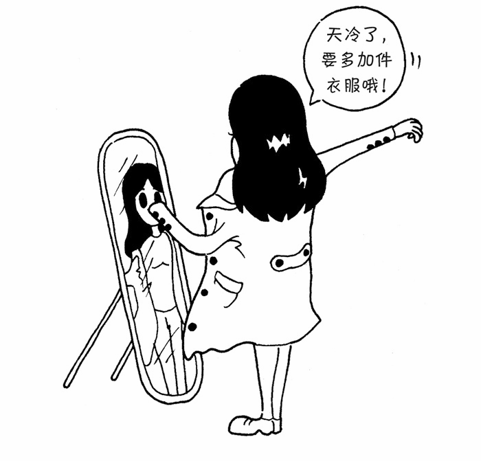

我们玩魔兽争霸的任务关时，对15级乱加技能点的野生英雄普遍没有好感，而是喜欢留着技能点，在游戏的进行过程中按需加技能。同样，在程序开发中，许多时候都并不希望某个类天生就非常庞大，一次性包含许多职责。那么我们就可以使用装饰者模式。装饰者模式可以动态地给某个对象添加一些额外的职责，而不会影响从这个类中派生的其他对象。
在传统的面向对象语言中，给对象添加功能常常使用继承的方式，但是继承的方式并不灵活，还会带来许多问题：一方面会导致超类和子类之间存在强耦合性，当超类改变时，子类也会随之改变；另一方面，继承这种功能复用方式通常被称为“白箱复用”，“白箱”是相对可见性而言的，在继承方式中，超类的内部细节是对子类可见的，继承常常被认为破坏了封装性。
使用继承还会带来另外一个问题，在完成一些功能复用的同时，有可能创建出大量的子类，使子类的数量呈爆炸性增长。比如现在有4种型号的自行车，我们为每种自行车都定义了一个单独的类。现在要给每种自行车都装上前灯、尾灯和铃铛这3种配件。如果使用继承的方式来给每种自行车创建子类，则需要 4×3 = 12 个子类。但是如果把前灯、尾灯、铃铛这些对象动态组合到自行车上面，则只需要额外增加3个类。
这种给对象动态地增加职责的方式称为装饰者（decorator）模式。装饰者模式能够在不改变对象自身的基础上，在程序运行期间给对象动态地添加职责。跟继承相比，装饰者是一种更轻便灵活的做法，这是一种“即用即付”的方式，比如天冷了就多穿一件外套，需要飞行时就在头上插一支竹蜻蜓，遇到一堆食尸鬼时就点开AOE（范围攻击）技能。
